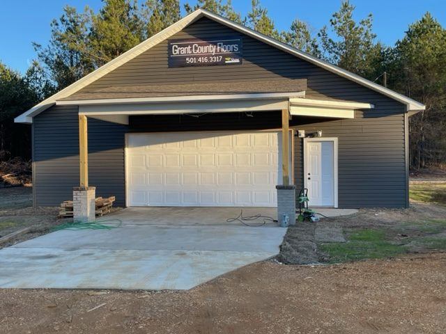
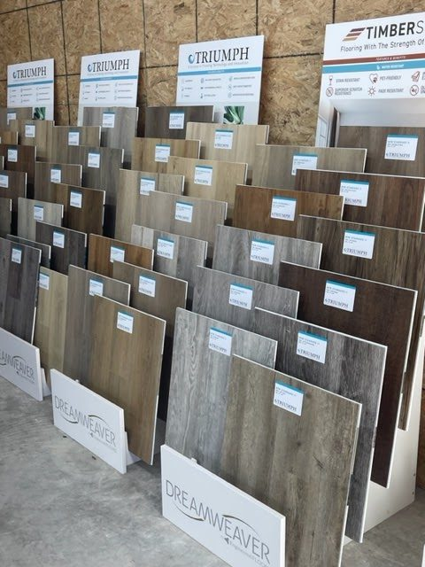
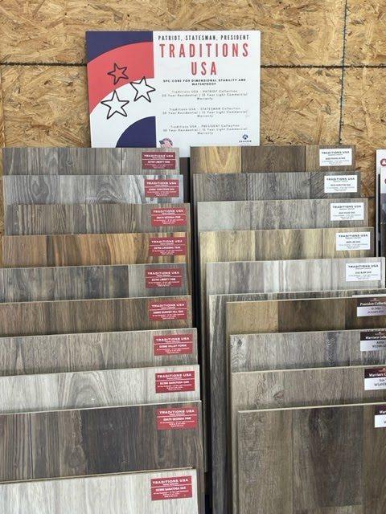
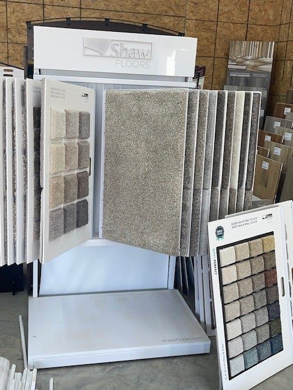

Highway 167 · Sheridan
Floors for the county.
9948 Highway 167 N. Come see the boards.
On the floor
Sample racks.
LVT, SPC, carpet — swipe the boards.




Highway 167 · Sheridan
9948 Highway 167 N. Come see the boards.
On the floor
LVT, SPC, carpet — swipe the boards.


